Randbøl
Grobkörniger, gräulicher Granit
Höhe: 185 cm
Größte Breite: 100 cm
Dicke ca. : 30 cm
Runenhöhe: 11,5 - 15 cm
Runeninschrift :
Der Verwalter Tofi errichtete diesen Stein zum Andenken an die Gattin des Verwalters. Diese Stäbe für Thorgunn werden sehr lange leben.

79 - Randbøl (auch St. Rygbjerg-Stein genannt) - Letztes Update 04.10.2025
Listennummer : DR 40 / DK SJy 14
| Navidaten: 55.65782 9.21618 oder: Bøgvadvej, 7183 Randbøldal |
Transliteration: tufi : bruti : risþi : stin : þansi : aft : lika : | brutia : þiR : stafaR : munu : | þurkuni : miuk : liki : lifa :
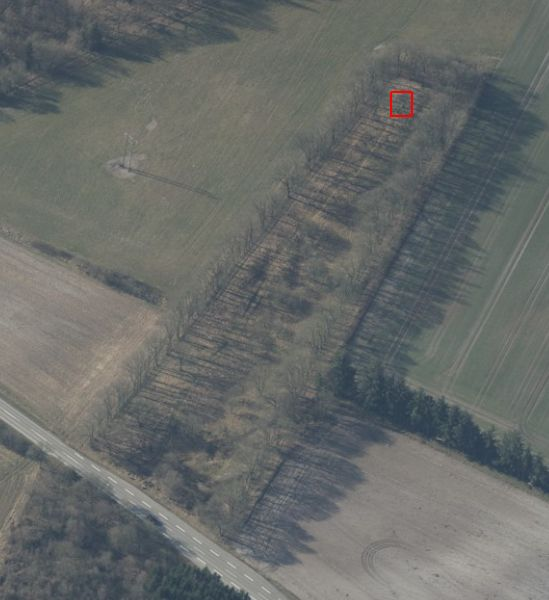
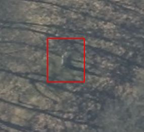
Dies ist ein Luftfoto vom 07.04.2023 von Skråfoto, das den Standort des Runensteins - rot umrandet - und ein extremes Detailfoto - an der Landstraße (Bøgvadvej) von Frederikshåb nach Egtved zeigt. Hier zeigt sich besonders wie extrem hochauflösend diese tollen Luftfotos sind. Skråfoto ist eine Webanwendung, die von Klimadatastyrelsen weltweit kostenlos bereitgestellt wird - Freie Nutzung unter Beachtung der Lizenz: CC BY 4.0. Die Aufnahmen werden alle zwei Jahre erneuert und neben einer Senkrechtaufnahme wird ein Schrägbild aus jeder Himmelsrichtung angeboten, das man über eine Adresssuche aufrufen kann.
Der Stein von Randbøl - auch großer Rybjerg-Stein genannt - nimmt eine Sonderstellung in der Reihe der dänischen Inschriftensteine aus der Wikingerzeit ein. Der Runenstein ist nämlich der Einzigste in Dänemark, der auf einem Grabhügel mit vermutlich gleichzeitigem Begräbnis gefunden wurde.
Die Runeninschrift wird in die Zeit von 900-970 datiert und verläuft in drei senkrechten Bändern. Die Inschrift wird wie hier dargestellt gelesen:
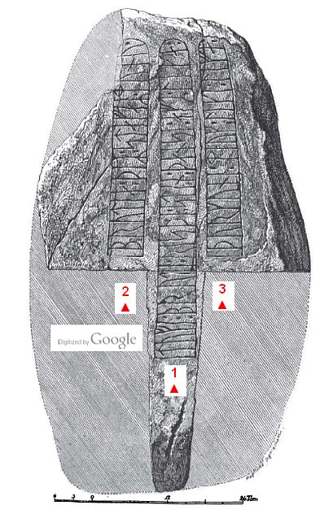
Bildquelle: Aarbøger for Nordisk Oldkyndighed og Historie - 1875 - Ludv. F. A. Wimmer - Store Rygbjærg-Stenen - S. 188-208 - Zeichnung von Prof. Julius Magnus Petersen
Die Fundumstände brachten es jedoch mit sich, dass der Stein zunächst großen Schaden erlitt. Als der örtliche Steinmetz Karl Erich im Dezember 1874 das Gebiet südlich von Frederikshåb abging, entdeckte er einen in Sand und Kies halbversunkenen Stein auf einem kleinen Sandhügel auf dem Grundbesitz von Peder Falther (Randbøl Sogn, matr. Nr. 3a). Ohne Verdacht zu schöpfen, begann der Steinmetz ihn zu Kilometersteinen zu verarbeiten. Der Grundbesitzer, der ihm den Stein zuvor verkauft hatte, war ihm bei diesen Arbeiten behilflich. Er war es dann auch, der plötzlich einen runenbeschriebenen Stumpf aus der Erde holte, worauf man die Spaltarbeiten glücklicherweise sofort einstellte.
Der Fund wurde am 08. Dezember 1874 durch den Steinmetz Karl Erich sofort gegenüber dem Bezirksamt in Vejle gemeldet. Von dort wurde der Fund auch an den Kreisstraßeninspektor Christen Henriksen Kidde (*03.04.1818 - 24.11.1894 - link-LIVES)
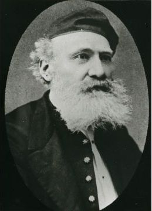
Bildquelle: Vejle Wiki - Lizenz: Public Domainin Vejle weitergemeldet. Dieser zeigte reges Interesse an dem Fund, kam vor Ort und verfasste mehrere Berichte - 13.12.1874, 23.04. und 30.04.1875 - an das Bezirksamt in Vejle. Von dort wurden diese Berichte auch nach Kopenhagen an das Museum für Nordische Alterthümer gesandt. Darüber wurde der Fund dort Ende April 1875 bekannt.
Christen Henriksen Kidde ist es auch zu verdanken, dass die einzelnen Steinbrocken des Runensteins gesichert wurden. Dessen Angaben in seinen Berichten zufolge war der Runenstein ursprünglich ca. 220 cm hoch, ca. 100 cm breit und noch ca. 30 cm dick. Ursprünglich soll er sogar ca. 100 cm dick gewesen sein.
Da Christen Henriksen Kidde in seinen Berichten, neben einer einfachen Zeichnung der Runenzeichen, auch erwähnte, dass der Grundbesitzer Falther einen Knochen im Grabhügel gefunden habe, entschied sich der damalige amtierende Leiter der Altertümerverwaltung in Kopenhagen, Prof. Helvig Conrad Christian Engelhardt (*20. September 1825 - 11. November 1881 - dänischer Archäologe - link-LIVES) - Bestattungsprotokoll
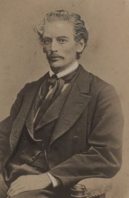
Bildquelle: Fotografie um 1875 von Fotograf Lauritz Olsen (*24.03.1834 - 25.05.1899) - Det Kgl. Biblioteks billedsamling - Lizenz: Public Domainfür eine schnellstmögliche Untersuchung vor Ort. Er bat seinen Freund Prof. Ludv. F. A. Wimmer (*07.02.1839 - 29.04.1920, Philologe und Runenforscher - link-LIVES - Politiets registerblade - Bestattungsprotokoll)
 Bildquelle:
Fotografie zw. 1877-1900 von Fotograf Hansen & Weller
-
Det Kgl. Biblioteks billedsamling - Lizenz:
Public Domain
Bildquelle:
Fotografie zw. 1877-1900 von Fotograf Hansen & Weller
-
Det Kgl. Biblioteks billedsamling - Lizenz:
Public Domain
ihn zu begleiten. Zusammen mit Prof. Julius Magnus Petersen (*04.09.1827 - 31.01.1917, Archäologischer Zeichner und Restaurator - link-LIVES - Bestattungsprotokoll)
 Bildquelle: Fotografie
von 1903 von Fotograf Marius Christensen
(*24.06.1874 -
25.06.1907) -
Det Kgl. Biblioteks billedsamling - Lizenz:
Public Domain
Bildquelle: Fotografie
von 1903 von Fotograf Marius Christensen
(*24.06.1874 -
25.06.1907) -
Det Kgl. Biblioteks billedsamling - Lizenz:
Public Domain
reisten sie am 05. Mai 1875 von Kopenhagen über Vejle und Egtved an den Fundort. Sie untersuchten und zeichneten den Runenstein am 06. und 07. Mai 1875.
Eine Zusammenfassung des ersten Untersuchungsberichtes sei nachfolgend angeführt:
"Der Stein lag etwa in der Mitte auf dem Hügel, mit der Inschrift nach unten, teilweise von Sand und Kies abgedeckt. Unter dem Stein war ein Grab. Die Untersuchung brachte einige Knochen zu Tage, sonst nichts. Eine sachkundige Analyse durch den Anatomie Professor F. Schmidt führte zu dem Ergebnis, dass die gefundenen Kochen sehr wahrscheinlich einer Frau, unter 30 Jahren alt, zuzuordnen sind. Das Grab lag 2 Fuß (ca. 63 cm) unter der Hügeloberfläche in Richtung WSW-ONO. Es wies eine längliche, vierkantige Form auf, war 7 Fuß 4 Zoll lang (ca. 2,30 m), 2 Fuß 4 Zoll breit (ca. 0,73 m), 2 Fuß 4 Zoll tief (ca. 0,73 m), mit nach innen abfallenden Seiten. Der Hügel war ziemlich flach, in der Mitte ungefähr 4 Fuß hoch (ca. 1,26 m), von einer leicht länglichen Form und etwa 65 Zoll lang (ca. 20,4 m) und ca. 42 Zoll breit (ca, 13,2 m)". (Anmerkung: 1 Fuß = 31,4 cm / 1 Zoll = 2,54 cm).
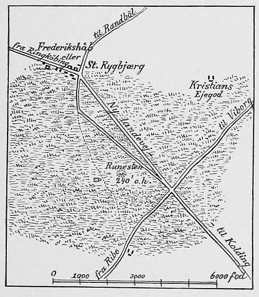
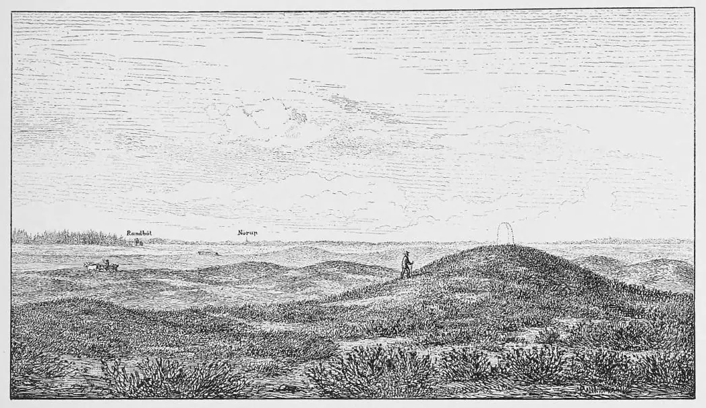
Lageskizzen von Prof. Ludv. F. A. Wimmer - Quelle: De danske Runemindesmærker undersøgte og tolkede af Ludv. F.A. Wimmer, 1893 - 1908, Band II, S. 96 und S. 98.
Durch George Stephens (*13.12.1813 - 09.08.1895, englischer Archäologe und Philologe)
 Bildquelle:
Minder fra min Virksomhed paa Arkæologiens
Omraade fra 1845 til 1908 von
Magnus Petersen (*04.09.1827 - 01.02.1917) auf der
Seite 265 - Lizenz:
Public Domain
Bildquelle:
Minder fra min Virksomhed paa Arkæologiens
Omraade fra 1845 til 1908 von
Magnus Petersen (*04.09.1827 - 01.02.1917) auf der
Seite 265 - Lizenz:
Public Domain
wurde zu diesem Runenstein im Jahr 1874-75 in den "Samlinger til jydsk Historie og Topografi, Band V", auf den S. 345-49 ein Aufsatz wiedergegeben.
In den beiden großen dänischen Runenwerken wurden jeweils Zeichnungen von Prof. Julius Magnus Petersen aufgenommen, die ich hier wiedergeben möchte.
Prof. P. G. Thorsen (*07.08.1811 - 06.05.1883, Bibliothekar, Runenforscher und Historiker - link-LIVES - Artikel: Levnedsbeskrivelser af de ved Københavns Universitets Firehundredaarsfest promoverede Doktorer, Illustreret Tidende 1882, Nr. 1235 - vom 27.05.1833 / Grabstein in Varde / Eheschließung in Varde am 19. August 1848)
 Bildquelle: Fotografie
zw. 1863-1900 von
Fotograf Budtz Müller (*26.12.1837 -
30.12.1884) -
Det Kgl. Biblioteks billedsamling - Lizenz:
Public Domain
Bildquelle: Fotografie
zw. 1863-1900 von
Fotograf Budtz Müller (*26.12.1837 -
30.12.1884) -
Det Kgl. Biblioteks billedsamling - Lizenz:
Public Domain
De danske runemindesmærker beskrevne og forklarede, anden Afdeling, Jyllands Runemindesmærker, Afbildninger og Text, I. Afbildninger, 1879 - Nr. 8 - Google Scan
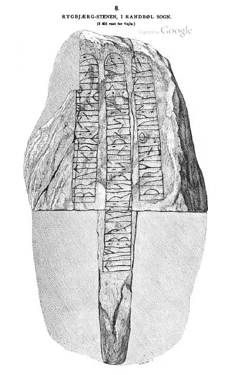
In seinem 1880 erschienenen Textband II macht er auf den S. 19 bis 22 Ausführungen zu diesem Runenstein.
Prof. P. G. Thorsens Nachlass (Bezeichnet als: P. G. Thorsens optegnelser, tegninger m.m. vedrørende runer og runemindesmærker - überführt aus der Kopenhagener Universitätsbibliothek 1929 - Gemäß Ministerialschreiben vom 04.03.1929; früher benannt als Additamenta 612 kvart - findet sich in der Königlichen Bibliothek unter NKS 3296 (in mehreren einzelnen Pappschachteln). In der Pappschachtel Nr. 17 wird diese Zeichnung, die er auf den 07.05.1875 datiert hat, verwahrt, die ich bei meinem Besuch in der Königlichen Bibliothek am 27.09.2022 fotografieren durfte.

Ein Sonderdruck von Prof. Ludv. F. A. Wimmers Handschrift "Store Rygbjærg-Stenen" war ihm mit einer Widmung - Unterschrift für mich unleserlich - vermacht worden, den er ausweislich seiner handschriftlichen Notiz am 16.10.1875 erhielt und den ich in Thorsens Nachlass fand.
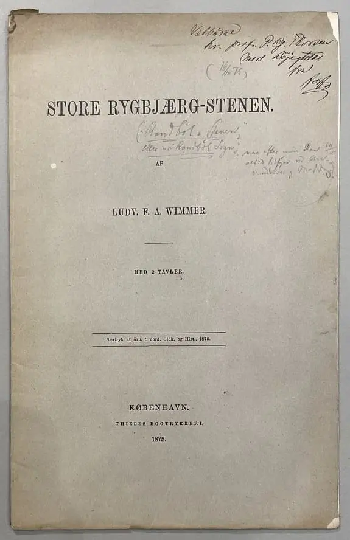
Prof. Ludv. F. A. Wimmer behandelt den Runenstein in seinem großformatigen Runenwerk De danske runemindesmærker undersøgte og tolkede af Ludv. F. A. Wimmer, Band I.2 - De historiske runemindesmarker, 1895 als Nr. 12, S. 96-111. Er hat den Runenstein persönlich vor Ort am 06./7. Mai 1875 und am 18. Juli 1878 untersucht und darüber die u.a. Zeichnung von Magnus Petersen noch persönlich überarbeitet.
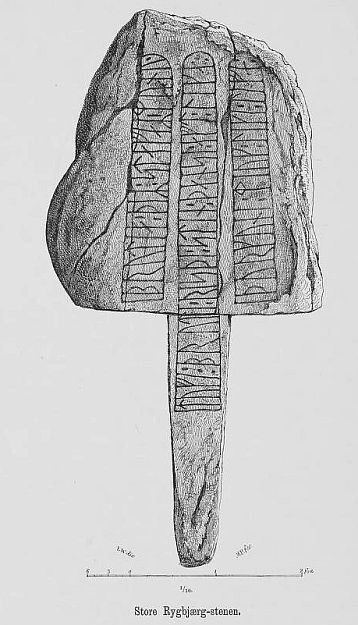
Er hat seine jahrelangen Aufzeichnungen der "Kgl. Bibliotek" in Kopenhagen überlassen. Ein Verzeichnis darüber wurde 1915 in Buchform herausgegeben - "Collectio runologica Wimmeriana: Fortegnelse over Ludv. F. A. Wimmers runologiske o. a. Samlinger i Det kgl. Bibliotek"
In seinen Unterlagen in derKöniglichen Bibliothek befinden sich unter "III - Originaltegninger af de danske Runemindesmærker, udførte paa Undersøgelsesrejserne af Magn. Petersen og kontrollerede paa Stedet af Ludv. Wimmer, samt Prøvetryk af de paa Grundlag af de nævnte Tegninger, Aftryk o. s. v. til De danske Runemindesmærker" udførte Afbildninger med Wimmers Rettelser"


zu dem Runenstein von Randbøl unter der Nr. 29 diese Zeichnung vom 18.07.1878, die ich bei meinem Besuch in der Königlichen Bibliothek am 27.09.2022 fotografieren durfte.

Daneben finden sich in seiner Sammlung auch noch diese originalen Aufzeichnungen zum Fundort/-lage.
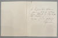 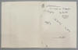 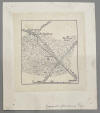 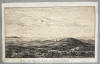


Prof. Ludv. F. A. Wimmer hatte vorab bereits eine Abhandlung in den Aarbøger for Nordisk Oldkyndighed og Historie - 1875 mit dem Titel Store Rygbjåærg-Stenen - S. 188-208 - veröffentlicht.
Durch Prof. Helvig Conrad Christian Engelhardt war bei der ersten Untersuchung der Grabhügel und das ihn umgebende Grundstück für die Altertümerverwaltung aufgekauft worden. Mit Dokument vom 07.Mai 1875 wurde das Gebiet auch umgehend geschützt. Die Bruchstücke des Steines wurden mit Hilfe von Zement zunächst durch den Steinkonservator Steffensen wieder zusammengesetzt - aus ingesamt 10 einzelnen Teilen - und danach 1875 auf dem Hügel aufgerichtet. Dazu wurde auf Veranlassung von Kreisstraßeninspektor J. Kidde ein neuer Weg zum Runenstein angelegt. 1934 wurde der Stein erneut instandgesetzt. Im harten Winter 1982/83 verschlechterte sich der Zustand des Steins aber zusehends, so dass man fürchtete er könnte vom Wasser/Frost gesprengt und zerstört werden. Man entschloss sich daher zu einer neuerlichen, umfassenden Restaurierung. Der Steinkonservator Leif Vognsen aus Ribe führte diese in Zusammenarbeit mit dem Steinmetz Svend Gudnason von der Fa. O. Gudnason & Søn aus Give auf Veranlassung des Kulturhistorisk Kontor i Skov- og Naturstyrelsen durch.
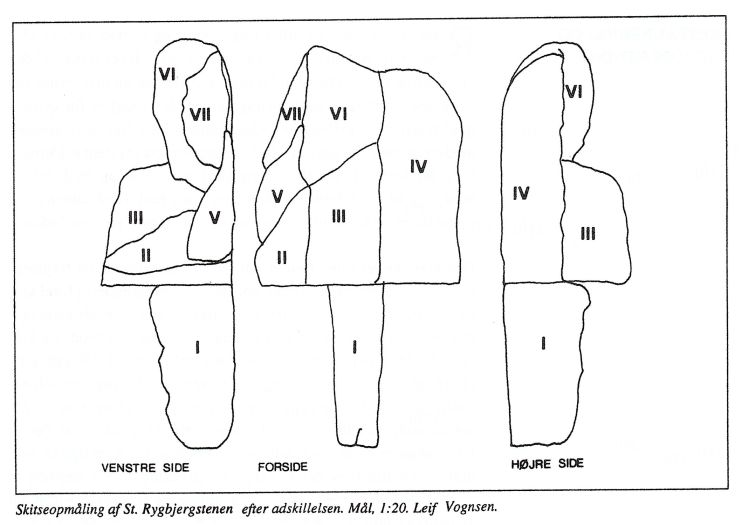
Diese zeichnerische Darstellung findet sich in Danmarks runesten - Runesten i landskabet - en registrant - Miljøministeriet - Skov- og Naturstyrelsen - 1992 - Leif Vognsen - St. Rygbjerg-stenen - et eksempel på restaurering - S. 87.
Diese alte Postkarte mit einer frühen Fotografie des Runensteins wurde im Jahre 1909 abgestempelt und war mit einer 5 Øre Briefmarke mit dem Konterfei des dänischen Königs Frederik VIII. (*03.06.1843 - 14.05.1912) versehen.
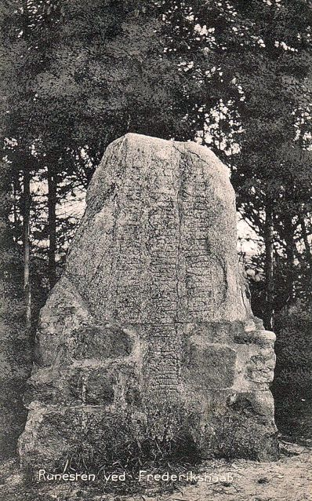
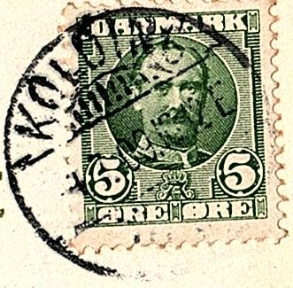
Darüber sieht man wie das aus Steinen gemauerte Fundament des Runensteins mal aussah.
Von Verner Dahlerup (Karl Verner Hornemann Dahlerup - *31.10.1859 - 24.08.1938, Professor für nordische Sprachen an der Universität Kopenhagen - link-LIVES) - Begravelsesprotokoller
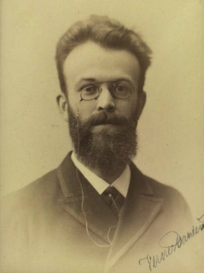
Bildquelle: Wikipedia - Lizenz: Public Domainwurde 1918 in dem Werk "Studier tillegnade Esaias Tegnér den 13. januari 1918" die Abhandlung mit dem Titel "Småting om to danske runeindskrifter" veröffentlicht. Auf den S. 510 bis 514 geht er auf die Inschriftdeutungen seitens Prof. Wimmer zu den beiden Runensteinen von Glavendrup und Randbøl (ab S. 512) ein. Er widerspricht der Deutung Wimmers der eine "Gespielin" sieht, während er zu "Ehepartner" tendiert.
Von Magnus Bernhard Olsen (*28.11.1878 - 16.01.1963, norwegischer Philologe)
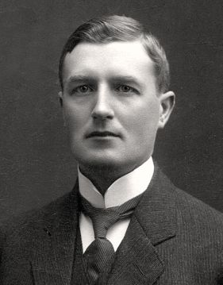
Bildquelle: Wikipedia - Lizenz: CC-BY-SAwurde 1922 in dem Werk "Arkiv för Nordisk Filologi, Band XXXVIII" auf der S. 102 eine kurzer Text aus dem Jahr 1919 zu dem Runenstein wiedergegeben, bei dem er auf die o.a. Abhandlung von Verner Dahlerup und seinen Deutungserklärung eingeht:
"Paa Store-Rygbjærgstenen tolker forf. lika som akk. af liki m. »lige, mage, (jevnbyrdig) egtefælle» (»Tove bryde reiste denne sten efter "brydens mage' Torgunn»), hvilket afgjort er at foretrække for Wimmer's tydning leka n. »legesöster».
Er bringt darüber zum Ausdruck, dass dessen Lesung "lika" - steht für Ehepartner - gegenüber der Deutung durch Prof. Wimmer mit "leka" - steht für Gespielin - eindeutig der Vorzug zu geben ist.
Diese Aufnahme stammt vom 22.05.1930 von Erik Moltke (*04.04.1901 - 19.10.1984, Runologe, Historiker - link-LIVES)
 Bildquelle: Scan von Buchumschlag "Runerne i Danmark og ders
oprindelse" - Erik Moltke - 1976 - Lizenz:
CC-BY-SA
Bildquelle: Scan von Buchumschlag "Runerne i Danmark og ders
oprindelse" - Erik Moltke - 1976 - Lizenz:
CC-BY-SA
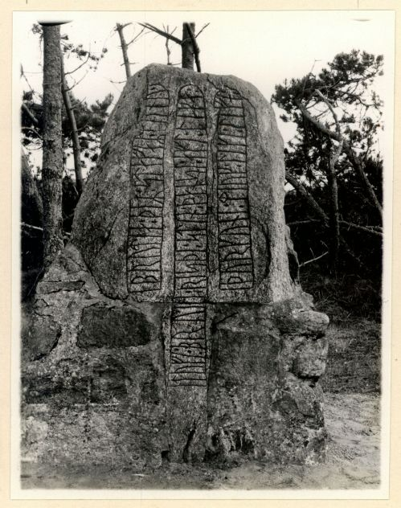
Quelle: Digitale Sammlung des Nationalmuseums Kopenhagen - Lizenz: CC-BY-SA
Hans Brix (*24.10.1870 - 20.11.1961, Schullehrer, später Professor für dänische Literatur an der Universität Kopenhagen - Portraitfoto nur über Namenslink, da Urheberrechtlich geschützt - link-LIVES - Melderegister Kopenhagen - Hochzeit) hat in den "Danske Studier" (Zeitschrift, die Forschungsartikel und Rezensionen zu Sprache und Literatur veröffentlicht) in der Ausgabe 1931 auf den S. 83-84 den kurzen Artikel mit dem Titel "Til Store Rygbjerg-Stenen" mit sprachwissenschaftlichem Inhalt veröffentlicht.
Im Jahr 1934 wurde eine Restaurierung des Fundamentes und auch der Zusammensetzung der einzelnen Bruchstücke des Runensteins vorgenommen, worüber das Objekt danach jahrzehntelang so aussah:
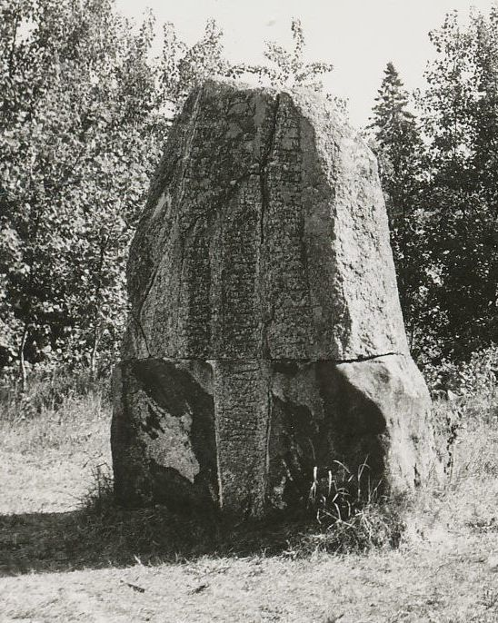
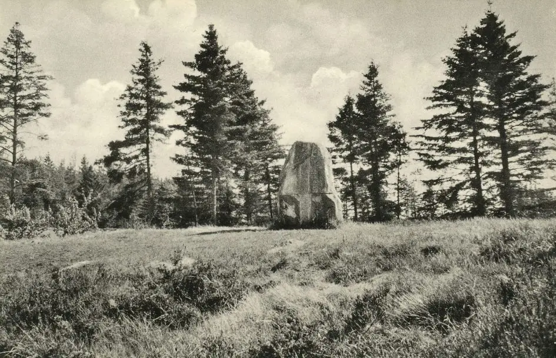
Fotoquelle: arkiv.dk - Unveränderte Wiedergabe mit freundlicher Erlaubnis des zuständigen Archivs (erteilt 24.03.2022 vom Randbøl Sogns Lokalarkiv og Museum).
Nicht lange nach der letzten Restaurierung wurde dieses Foto durch Marie Stoklund (*11.08.1934 - 03.09.2021, dänische Runologin am dänischen Nationalmuseum) im Jahr 1984 aufgenommen. So sieht das Ganze auch heute noch aus.
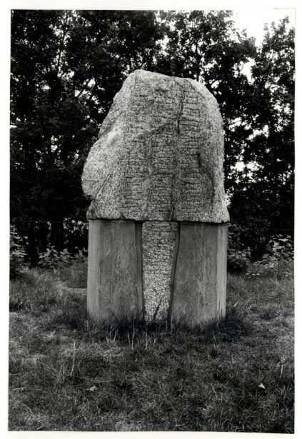
Quelle: Digitale Sammlung des Nationalmuseums Kopenhagen - Lizenz: CC-BY-SA
Im Vorfeld zu dem 2016 erschienenen Buch von Lisbeth M. Imer (*1973, Runologin am Nationalmuseum Kopenhagen) "Danmarks Runesten - en fortælling" reiste sie mit dem Fotografen Roberto Fortuna zur Bestandsaufnahme durch die Lande. Dieser hat die Runensteine abends bei Dunkelheit mit Schräglicht aufgenommen und darüber wirklich herausragende Fotos erzielt. Diese Aufnahme entstand am 10.11.2011.
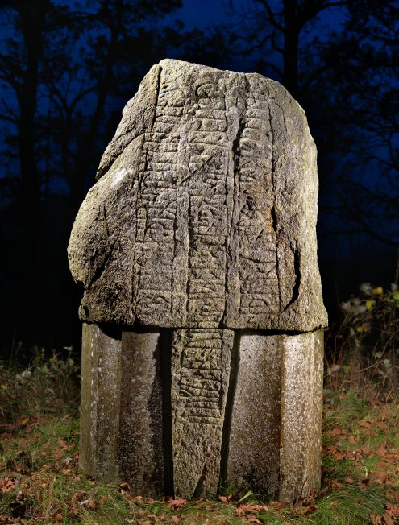
Quelle: Digitale Sammlung des Nationalmuseums Kopenhagen - Lizenz: CC-BY-SA
Diese Aufnahmen wurden von mir bei meinem Besuch in Randbøl am Dienstag, 23.08.2016, aufgenommen (vergößerte Darstellung bei Mausklick aufs Bild):
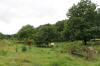 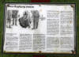 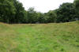 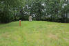 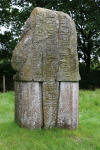 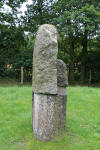 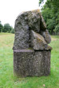 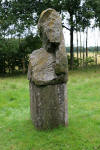


Zuvor war ich schon am Freitag, 26.09.2003, vor Ort. Im Rahmen meiner 2022er Jütland Wikinger Tour kam ich nun am Samstag, 18.06.2022, erneut an die Örtlichkeit. Dabei habe ich diese neuen Fotos aufgenommen.
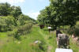 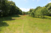 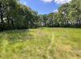 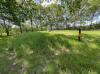 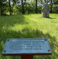 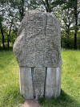 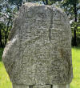 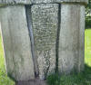 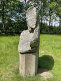 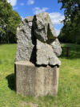 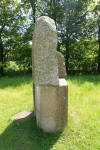 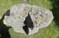


Die Informationen zu diesem Runenstein aus der dänischen Runendatenbank finden sich hier.
Der entsprechende Eintrag in "Fund og Fortidsminder" ist hier verlinkt. Dort ist inzwischen auch ein Zustandsbericht des Steinkonservators Leif Vognsen aus dem Jahr 2018 eingebettet.
Über diesen Link finden sich zu dem Runenstein Informationen des Forschungsprojektes "Runes" der Akademie der Wissenschaften zu Göttingen.
Literaturhinweise:
Aarbøger for Nordisk Oldkyndighed og Historie - 1875 - Ludv. F. A. Wimmer - Store Rygbjåærg-Stenen - S. 188-208 - siehe oben
Rygbjerg-Stenen i Nørre-Jylland - George Stephens - Samlinger til Jydsk Historie og Topografi - V. Bind - 1874-75 - S. 344 (Zeichnung), S. 345-349 (Text) - siehe oben
Danske Studier 1931 - Hans Brix - Til Store Rygbjerg-Stenen - S. 83/84 - siehe oben
Danmarks runesten - Runesten i landskabet - en registrant - Miljøministeriet - Skov- og Naturstyrelsen - 1992 - Darin auf S. 81 ff.: Leif Vognsen - St. Rygbjerg-stenen - et eksempel på restaurering
Die gesamte Anlage ist geschützt und wird in den entsprehenden Unterlagen mit dem Text (übersetzt) geführt: "Bezirk Randbøl, Abteilung 118 in der Frederikshåb-Plantage. Reg.: Gemäß jdn. der Stein mit Umgebung steht unter Denkmalschutz 1875. Hoch, 1 x 15 m, oben flach; hier steht der Runenstein Store Rygbjerg; am Fuß eine Eisenplatte mit einer Übersetzung der Inschrift. Liegt in einem Heideschutzgebiet, ca. 270 x 35 m".